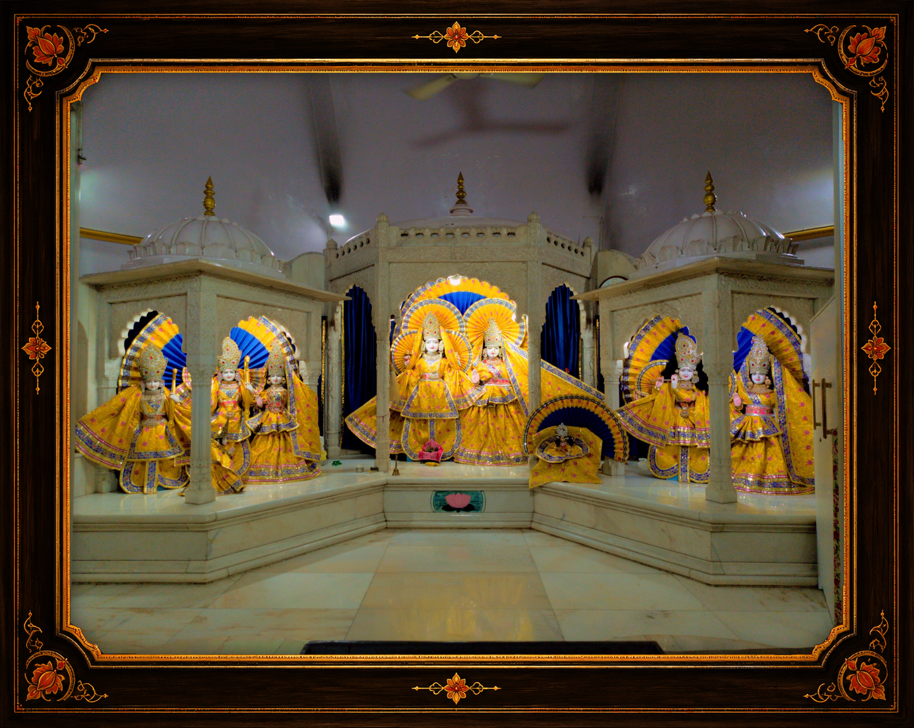

🔍 Click to Zoom
Principal Sanctum
श्री लक्ष्मी नारायण मंदिर
SHRI LAXMI NARAYAN MANDIR
The central sanctum sanctorum of Geeta Bhawan enshrines Bhagwan Shri Vishnu and Devi Mahalakshmi, flanked by Shri Radha-Krishna and Shri Ram Darbar in exquisite white marble under carved canopies. Adorned in radiant golden pitambar vastra and peacock-feathered mukuts.